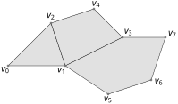
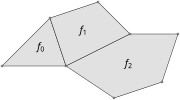
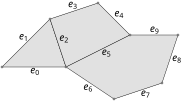
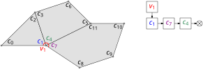
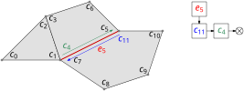
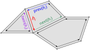
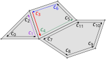

Mesh Class
Legacy Mesh vs Surface Mesh
Since v6.0.0, Lagrange provides a polygonal mesh class (SurfaceMesh) that replaces the
original (legacy) mesh class. It is now the default mesh type used throughout Lagrange. The
legacy mesh class remains available only as an opt-in, via the LAGRANGE_ENABLE_LEGACY_FUNCTIONS
option.
The SurfaceMesh class is the new generic mesh class in Lagrange to represent meshes. It is a very generic class that supports triangle meshes, quad meshes, as well as quad-dominant and arbitrary polygonal meshes. This new data structure was designed with a couple of key features in mind:
- Generic and powerful API:
- A generic mesh API that works in 2D, 3D, ND with triangles/quad/hybrid meshes using the same SurfaceMesh type.
- A simple API based on
std::span<>(pointer + size). This avoids a lot of header-only template shenanigans, while providing a low-overhead but secure interface to manipulate continuous buffers.
- Clean headers:
- The main
SurfaceMesh.hheader only pulls a few STL headers (<memory>,<string_view>,<span>and<functional>-- the last one can be avoided easily). - A separate header
views.hallows to "view" mesh buffers as Eigen matrices (e.g., for easy interfacing with libigl). - A separate header
foreach_attributes.hprovides utility functions to iterate over mesh attributes.
- The main
- Efficient memory usage:
- Generic copy-on-write mesh attributes (per vertex, facet, edge, etc.).
- Efficient memory storage: a pure triangle/quad meshes only needs 2 buffers for vertex positions and facet indices, while hybrid meshes will use an additional offset buffer.
- Mesh attributes can wrap external buffers (including const buffers), as long as memory layout is compatible. Policies determine write/growth behavior.
- Mesh attributes can be exported in a
std::shared_ptr<>to be transferred back to client code.
- Dynamic editing capabilities:
- Mesh vertices and facets can be dynamically inserted and removed efficiently.
- Powerful attribute system:
- Generic attribute system supporting any fixed-size integer types (
int8_t...uint64_t) and floating point types (float,double). - Attributes can be attached to any mesh element (vertex, facet, edge, corner), or can be indexed by a secondary buffer (e.g. UVs).
- Usage tag specifies how attributes are used and transformed (e.g. Color, Normals, UV, etc.).
- Generic attribute system supporting any fixed-size integer types (
- Optional edge/connectivity attributes:
- Mesh edges can be numbered automatically, or based on a user-provided ordering.
- Connectivity attributes allow efficient navigation around mesh elements (similar to half-edges).
- Fast compilation times1:
- Clean separation between class declaration/definition allows for faster build times.
- Explicit template instantiation is used to limit available types usable with our
SurfaceMesh<>andAttribute<>class. - X macros are used to facilitate explicit template instantiation of predetermined types (can be used by client code).
- Extensive documentation
- Complete user guide (this document)
- Full Doxygen API reference.
Mesh Representation
At the core, our mesh data structure is just a collection of mesh elements (vertices, facets, edges, corners), where each element is attached a number of attributes. Specifically, we define the following elements:
-
Vertices: Points used to form the facets of the mesh. Typically associated with a 2D or 3D position attribute.

-
Facets: Polygons formed by connecting mesh vertices together. In a triangle mesh, all facets are 3-gons.

-
Edges: Edges are formed by unordered pairs of consecutive vertices in a mesh facet. The set of mesh edges is defined implicitly from the mesh facets. See Mesh Edges for more details.

-
Corners: Facet corner elements can be used to reference vertices in a specific facet. Corners from the same facets are indexed contiguously in a flat list containing all facet corners.
Our mesh data structure is very generic, and can represent any kind of polygonal mesh, non-manifold surface, mesh containing isolated vertices, point clouds, etc.
Terminology
- Regular mesh: In the context of this documentation, a regular mesh is a mesh whose facets have the same constant size. E.g. a triangle mesh is a regular mesh (facet size = 3). So is a quad mesh (facet size = 4), a pentagonal mesh, etc.
- Hybrid mesh: A hybrid mesh is a mesh whose facets may have varying sizes. E.g. a quad dominant mesh is a hybrid mesh.
- Vertex valence: Number of facet corners pointing to a given vertex (repeated vertex indices in a degenerate facet will count multiple times towards the vertex valence).
- Facet size: Number of corners/vertices in a facet. Facet sizes must be > 0. Facets of size 1 and 2 are supported.
A hybrid mesh will store an additional "offset" attribute for each facet, to determine where each facet starts/ends in the attribute buffer storing vertex indices.
Querying Mesh Type
The facet structure of a mesh can be queried at runtime: is_regular(), is_hybrid(),
is_triangle_mesh() and is_quad_mesh() return booleans, while get_vertex_per_facet()
returns the common facet size of a regular mesh.
Offset Indices
In the following mesh, facets [f0, f1, f2] have an "offset" attribute of [0, 3, 7]. This
means that the first corner of f0 is c0, the first corner of f1 is c3, etc. The size of
a facet can be computed from the difference between two consecutive offsets.
Adding Vertices/Facets
Simple version:
lagrange::SurfaceMesh<Scalar, Index> mesh;
mesh.add_vertices(10); // adds 10 vertices with 0-initialized coordinates
mesh.add_triangles(3); // adds 3 triangles with 0-initialized vertex indices
mesh.add_quads(2); // adds 2 quads with 0-initialized vertex indices
Another example:
lagrange::SurfaceMesh<Scalar, Index> mesh;
mesh.add_vertex({0.5, 0.2, 0.9}); // adds a vertex at (0.5, 0.2, 0.9)
mesh.add_triangle(1, 3, 4); // adds triangle (v1, v3, v4)
mesh.add_quad(1, 3, 4, 2); // adds quad (v1, v3, v4, v2)
mesh.add_polygon({1, 3, 4, 2, 5}); // adds polygon (v1, v3, v4, v2, v5)
To create a mesh from an existing buffer (with copy):
std::vector<Scalar> vertices; // flat buffer of size N x 3
std::vector<Index> facets; // flat buffer of size M x 3
// ... fill up vertices/facets ...
Index num_vertices = Index(vertices.size()) / 3;
Index num_facets = Index(facets.size()) / 3;
lagrange::SurfaceMesh<Scalar, Index> mesh;
mesh.add_vertices(num_vertices, vertices);
mesh.add_triangles(num_facets, facets);
Note that any continuous buffer of the appropriate size will work. If your input buffer is of type
std::vector<std::array<Scalar, 3>>, you will need to convert the pointer:
std::vector<std::array<Scalar, 3>> vertices;
lagrange::SurfaceMesh<Scalar, Index> mesh;
mesh.add_vertices(
Index(vertices.size()),
{vertices.empty() ? nullptr : vertices[0].data(), 3 * vertices.size()});
To add many facets that all share the same size in a single call, use add_polygons():
lagrange::SurfaceMesh<Scalar, Index> mesh;
mesh.add_vertices(20);
// Add 4 pentagons (facet size = 5) with 0-initialized vertex indices
mesh.add_polygons(4, 5);
You can add multiple polygonal facets with different sizes in the same function call by using the
add_hybrid() method. While this method can take an existing buffer as input, it may be simpler to
use it via user-defined callbacks:
lagrange::SurfaceMesh<Scalar, Index> mesh;
std::mt19937 gen;
std::uniform_int_distribution<Index> random_facet_size(3, 6);
std::uniform_int_distribution<Index> random_vertex_index(0, 9);
std::uniform_real_distribution<Scalar> random_position(0, 1);
mesh.add_vertices(10, [&](Index, lagrange::span<Scalar> p) {
p[0] = random_position(gen);
p[1] = random_position(gen);
p[2] = random_position(gen);
});
mesh.add_hybrid(4,
// The first callback determines the degree of facet `f`
[&](Index f) { return random_facet_size(gen); },
// The second callback sets the mapping corner id -> vertex id for facet `f`
[&](Index f, lagrange::span<Index> t) {
for (Index i = 0; i < t.size(); ++i) {
// Assign a random vertex id to each facet corner
t[i] = random_vertex_index(gen);
}
});
Wrapping External Buffers and Eigen Matrices
The buffer-taking add_*() overloads copy the input data into the mesh. To instead wrap an
existing external buffer as the vertex/facet data without copying, use wrap_as_vertices() and
wrap_as_facets(). Please read our dedicated section on wrapping external
buffer, as well as our documentation on
SharedSpan for tracking ownership of shared objects when
wrapping external buffers.
Removing Vertices/Facets
Batch Removal Only
Currently, we only support efficient batch removal of vertices/facets. This is because removing any mesh element will cause reindexing of all mesh attributes referencing a mesh element (e.g. vertex indices). To allow for "lazy" deletion, you can use an attribute to keep track of "deleted" vertices/facets until you actually clean them up. An element removal is a O(|V| + |F|) operation.
To remove a list of vertices/facets:
lagrange::SurfaceMesh<Scalar, Index> mesh;
mesh.add_vertices(20);
mesh.add_triangles(12);
// Remove vertices v2, v5 and v9
mesh.remove_vertices({2, 5, 9});
// Remove facets v6, v2 and v8
mesh.remove_facets({6, 2, 8});
Alternatively, you can use a filter returning a boolean value to determine the vertices/facets to remove:
lagrange::SurfaceMesh<Scalar, Index> mesh;
mesh.add_vertices(20);
mesh.add_triangles(12);
// Remove vertices with even index
mesh.remove_vertices([](Index v) { return (v % 2 == 0); });
// Remove random facets
std::mt19937 gen;
std::uniform_int_distribution<int> flip_coin(0, 1);
mesh.remove_facets([&](Index f) { return flip_coin(gen) == 1; });
Vertex Removal
Removing a vertex will automatically remove any facet containing that vertex!
Facet Removal
Removing a facet will not automatically remove any incident vertex. You can end up with floating/isolated vertices after facet removal. Consider filtering them as a post-processing.
Accessing Mesh Elements
Beyond the Eigen matrix views, mesh elements can be queried directly, one element at a time. This works uniformly for regular and hybrid meshes.
lagrange::SurfaceMesh<Scalar, Index> mesh;
// Fill up mesh...
// Number of elements of each type
Index nv = mesh.get_num_vertices();
Index nf = mesh.get_num_facets();
Index nc = mesh.get_num_corners();
Index ne = mesh.get_num_edges(); // requires initialize_edges()
// Read a vertex position (span of size get_dimension())
auto p = mesh.get_position(0);
// Iterate over facets and their corners
for (Index f = 0; f < mesh.get_num_facets(); ++f) {
// Vertex indices of facet f (span of size get_facet_size(f))
auto facet_vertices = mesh.get_facet_vertices(f);
for (Index lv = 0; lv < mesh.get_facet_size(f); ++lv) {
Index v = facet_vertices[lv]; // lv-th vertex of facet f
// ...
}
}
// Corner <-> vertex/facet mapping
for (Index c = 0; c < mesh.get_num_corners(); ++c) {
Index v = mesh.get_corner_vertex(c); // vertex referenced by corner c
Index f = mesh.get_corner_facet(c); // facet owning corner c
}
Corner Ranges
The corners of a facet f occupy the contiguous range
[mesh.get_facet_corner_begin(f), mesh.get_facet_corner_end(f)). For a regular mesh this is
simply [f * mesh.get_vertex_per_facet(), (f + 1) * mesh.get_vertex_per_facet()).
Use the ref_xxx() variants (e.g. ref_position(), ref_facet_vertices()) for writable access.
See Copy-On-Write below.
Flipping Facet Orientation
The orientation of one or more facets can be reversed in place with flip_facets(). As with facet
removal, you can select facets via an explicit list or a predicate:
lagrange::SurfaceMesh<Scalar, Index> mesh;
// Fill up mesh...
// Flip a specific list of facets
mesh.flip_facets({0, 2, 5});
// Flip facets based on a predicate (e.g. flip every other facet)
mesh.flip_facets([](Index f) { return (f % 2 == 0); });
Reorienting Attributes
flip_facets() accepts an optional AttributeReorientPolicy argument to control whether
orientation-sensitive attributes (e.g. normals) are reoriented along with the facets.
Clearing and Compacting Storage
// Remove all facets (vertices are kept)
mesh.clear_facets();
// Remove all vertices (this also removes all incident facets)
mesh.clear_vertices();
// Release excess memory reserved by the internal buffers
mesh.shrink_to_fit();
// Convert hybrid storage to regular storage if all facets have the same size
mesh.compress_if_regular();
Copy-On-Write
All mesh data is stored in an Attribute object, including vertex positions, facet indices, etc. These mesh attributes are handled via a copy-on-write mechanism, meaning that copying a mesh is a cheap operation by default: no buffer is actually duplicated until you start writing to it. For this reason, we distinguish most accessors between getters and setters:
- Getters start with
get_xxx()and provide read-only access to an attribute data. They will not cause any copy. - Setters start with
ref_xxx()and will cause an immediate buffer copy if the buffer is not uniquely owned (i.e. there are more than 1 object referencing the same buffer).
Note that both getters and setters are safe to use concurrently. Please read our "note on thread-safety" for more information.
See below for a short example:
lagrange::SurfaceMesh<Scalar, Index> mesh;
// ... Fill up mesh ...
lagrange::SurfaceMesh<Scalar, Index> copy = mesh;
// Writable reference to a vertex
auto p = copy.ref_position(1); // <-- leads to a copy of the vertex buffer
p[0] = 0.1;
p[1] = 0.2;
p[2] = 0.3;
// Now vertices v1 are different
std::equal(
mesh.get_position(1).begin(),
mesh.get_position(1).end(),
copy.get_position(1).begin()); // --> false
// The pointers to the vertex positions are now different
mesh.get_vertex_to_position().get_all().data() ==
copy.get_vertex_to_position().get_all().data(); // --> false
// But the pointers to the facet indices are still the same
mesh.get_corner_to_vertex().get_all().data() ==
copy.get_corner_to_vertex().get_all().data(); // --> true
Eigen Matrix Views
Mesh attributes such as positions and facet indices can be viewed as Eigen matrices. Specifically,
we provide read-only views as Eigen::Map<const ...>:
#include <lagrange/SurfaceMesh.h>
#include <lagrange/views.h>
#include <igl/massmatrix.h>
lagrange::SurfaceMesh<Scalar, Index> mesh;
// Fill up mesh data...
// With ADL, no need to prefix by lagrange::
auto V_view = vertex_view(mesh);
auto F_view = facet_view(mesh);
// Call your favorite libigl function
Eigen::SparseMatrix<Scalar> M;
igl::massmatrix(V_view, F_view, igl::MASSMATRIX_TYPE_VORONOI, M);
Writable reference are also available:
// Writable reference, creates a copy if buffer is not uniquely owned
auto V_ref = vertex_ref(mesh);
auto F_ref = facet_ref(mesh);
// Center mesh around vertex barycenter
V_ref.rowwise() -= V_ref.colwise().mean();
Regular Meshes Vs Hybrid Meshes
On hybrid meshes, it is not possible to "view" facet indices as a 2D matrix. This is because
each "row" of the matrix would have a variable width, due to the varying facet sizes. For this
reason, trying to get a facet_view() on a hybrid mesh will throw a runtime exception.
Mesh Attributes
Arbitrary mesh attributes can be viewed as Eigen matrices via the matrix_view() and
matrix_ref() functions. Please read our attribute documentation for some
examples.
Mesh Edges
By default, a mesh object is very lightweight, and does not compute edge ids or connectivity
information. If this information is desirable, it is possible to compute it by calling the
initialize_edges() method:
lagrange::SurfaceMesh<Scalar, Index> mesh;
mesh.add_vertices(10);
mesh.add_triangle(0, 1, 2);
mesh.add_quad(1, 3, 4, 2);
mesh.add_polygon({0, 2, 4, 5, 6});
// Let Lagrange assign an id to each edge
mesh.initialize_edges();
// ...
// Once edge data is no longer needed, clear related mesh attributes:
mesh.clear_edges();
In practice, edge and connectivity data are stored as special mesh attributes, which can be accessed/edited like any other mesh attribute!
If a specific ordering of the mesh edges is desired, provide it to the initialize_edges() method:
// Explicit edge id -> vertex ids mapping
const std::vector<std::array<Index, 2>> edges = {
{0, 1},
{1, 3},
{3, 4},
{4, 5},
{5, 6},
{6, 0},
{1, 2},
{2, 0},
{2, 4},
};
// Passed to the mesh via a std::span<>
mesh.initialize_edges({&edges[0][0], 2 * edges.size()});
Redundant Initialization
If a mesh already contains edges information, mesh.initialize_edges() will not do anything. If
you want to reorder existing edges, please clear edge attributes first, and re-initialize mesh
edges.
Connectivity And Navigation
Connectivity And Edge Information
Navigating between adjacent and incident mesh elements requires building connectivity
information. Since such connectivity information is necessary to uniquely index mesh
edges, the two set of attributes are tied together. In practice, this means that calling any
mesh navigation method requires having called mesh.initialize_edges() beforehand.
To efficiently navigate between adjacent facets, or between incident vertex/facets, we store "chains" of corners around vertices and edges as single-linked lists as follows:
-
Corners Around A Vertex. The chain of corners around a vertex can be represented by two attributes. One vertex attribute giving the head of each list, and one corner attribute giving the next corner in the linked list for each "chain" around a vertex. Since each corner belongs to one chain only, we can store all linked lists as flattened attribute for the entire mesh.

Edges Around A Vertex
To iterate over the edges incident to a given vertex, you will notice that we only provide a single method
foreach_edge_around_vertex_with_duplicates(). This method will call the callback function repeatedly for each facet which contains an incident edge to the prescribed vertex. -
Corners Around An Edge. The same principle can be applied to chain corners around a given edge. Note that since the facets are oriented, we only chain one canonical corner per facet around a given edge.

Non-Manifold Edges
A nice advantage of this connectivity representation is that we support any type of non-manifold meshes. This is in contrast with most half-edge data structure implementations which assume manifold surfaces.
To navigate around a mesh element (vertices/edges), we provide convenience functions
foreach_xxx_around_xxx():
lagrange::SurfaceMesh<Scalar, Index> mesh;
// Fill up mesh...
// Compute vertex valence
std::vector<Index> vertex_valence(mesh.get_num_vertices(), 0);
for (Index v = 0; v < mesh.get_num_vertices(); ++v) {
mesh.foreach_facet_around_vertex(v, [&](Index f) {
++vertex_valence[v];
});
}
In the example above, we could have used the method count_num_corners_around_vertex() to
compute vertex valence directly. See SurfaceMesh class documentation for a full reference.
In addition to the foreach_xxx_around_xxx() helpers, the following accessors provide direct
navigation once edges have been initialized:
| Method | Description |
|---|---|
get_edge(f, lv) |
Edge id of the lv-th edge of facet f. |
get_corner_edge(c) |
Edge id associated with corner c. |
get_edge_vertices(e) |
The two endpoint vertices of edge e. |
is_boundary_edge(e) |
Whether edge e lies on the mesh boundary. |
get_one_facet_around_edge(e) |
An arbitrary facet incident to edge e. |
get_clockwise_corner_around_vertex(c) / get_counterclockwise_corner_around_vertex(c) |
Traverse corners around a vertex (manifold ordering). |
get_first_corner_around_vertex(v) / get_next_corner_around_vertex(c) |
Walk the chain of corners around a vertex. Works on non-manifold geometry; the chain order has no geometric meaning. |
count_num_corners_around_vertex(v) / count_num_corners_around_edge(e) |
Count incident corners. |
Additional traversal helpers include foreach_facet_around_edge(), foreach_facet_around_facet(),
foreach_corner_around_edge() and foreach_corner_around_vertex(). See the SurfaceMesh class
documentation for the full list.
Degenerate Facets
If a mesh facet is degenerate, and references the same vertex several time (e.g. facet f2 =
(0, 1, 1)), then mesh.foreach_facet_around_vertex(1) will call the facet f2 twice.
Half-Edges
There is a natural correspondence between the usual half-edge notion and a facet corner (see figure below). While Lagrange currently does not offer half-edge data-structure for mesh navigation, corner indices can be used to navigate around mesh elements the same way a half-edge data structure does.


Twin Half-Edge
To implement the twin(h_i) operation, you can use SurfaceMesh::get_next_corner_around_edge().
In the future we may add a half-edge "proxy" structure to facilitate mesh navigation.
Mesh Metadata
Besides typed attributes, a mesh can store arbitrary string key/value pairs as metadata. This is handy for provenance information, units, author, etc.
lagrange::SurfaceMesh<Scalar, Index> mesh;
// Create or update a metadata entry
mesh.create_metadata("author", "Lagrange");
mesh.set_metadata("author", "Lagrange Team");
// Read it back
std::string_view author = mesh.get_metadata("author");
Metadata is stored as value attributes, and is preserved when the mesh is copied.
Supported Types
While our SurfaceMesh<> class is templated by both a Scalar and Index type, we only actually
support a finite set of template parameters. Specifically:
- Scalar can only be
floatordouble. - Index can only be
uint32_toruint64_t.
We provide the following type aliases for convenience:
| Alias | Actual Type |
|---|---|
SurfaceMesh32f |
SurfaceMesh<float, uint32_t> |
SurfaceMesh32d |
SurfaceMesh<double, uint32_t> |
SurfaceMesh64f |
SurfaceMesh<float, uint64_t> |
SurfaceMesh64d |
SurfaceMesh<double, uint64_t> |
Linking Error for Unsupported Types
If you try to use our SurfaceMesh<> class with an unsupported Scalar/Index type,
you will encouter a linking error due to unreferenced symbols.
Writing Functions Taking SurfaceMesh As Parameter
To write a function taking a SurfaceMesh<> as a parameter, you can use our X macros to
explicitly instantiate a templated function with the supported mesh types. For example, the
vertex_view() function is instantiated as follows:
////////////////
// In views.h //
////////////////
template <typename S, typename I>
ConstRowMatrixView<S> vertex_view(const SurfaceMesh<S, I>& mesh);
//////////////////
// In views.cpp //
//////////////////
template <typename S, typename I>
ConstRowMatrixView<S> vertex_view(const SurfaceMesh<S, I>& mesh)
{
// Function definition
return {};
}
// Explicit template instantiation
#define LA_X_views_mesh(_, S, I) \
template ConstRowMatrixView<S> vertex_view(const SurfaceMesh<S, I>& mesh);
LA_SURFACE_MESH_X(views_mesh, 0)
-
The new polygonal mesh class uses explicit template instantiation to facilitate compilation. Note that some legacy code paths remain header-only, so overall compilation times still have room for improvement. ↩